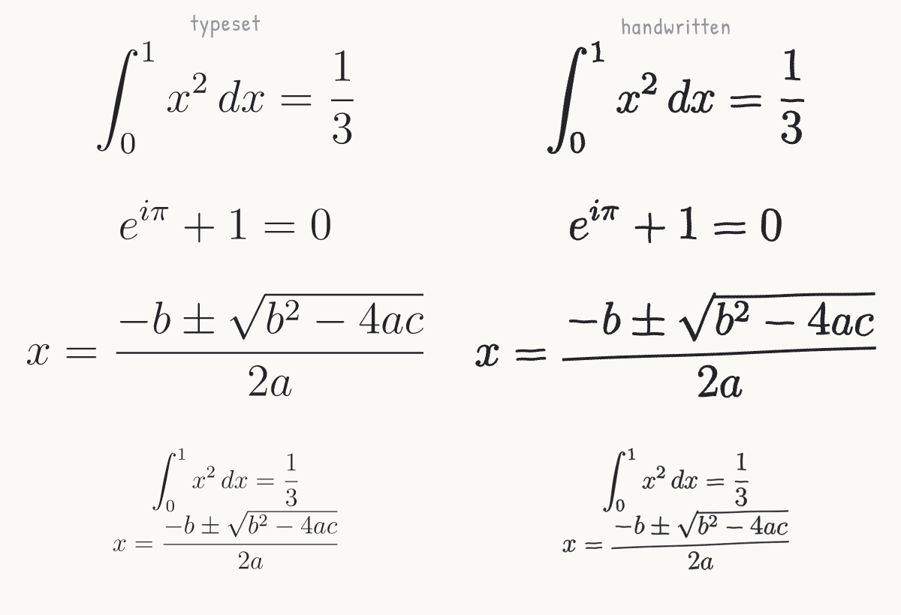
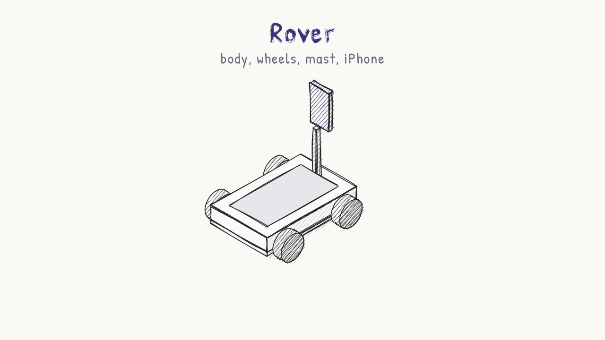
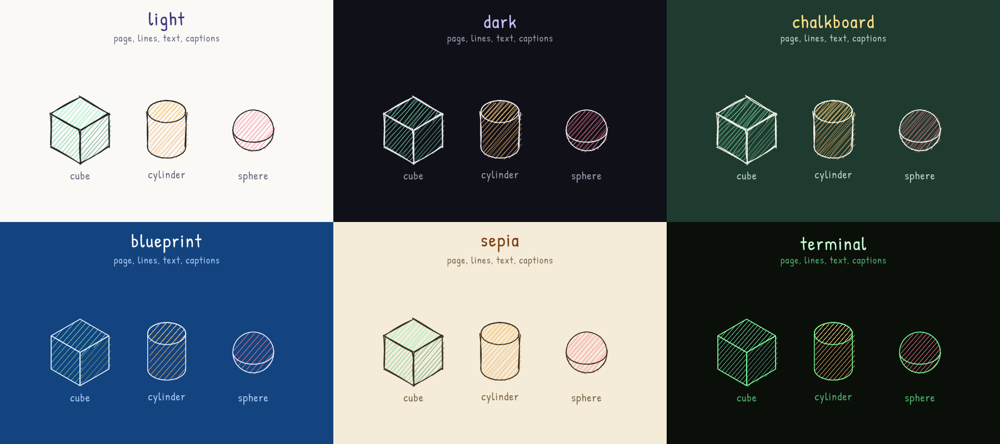
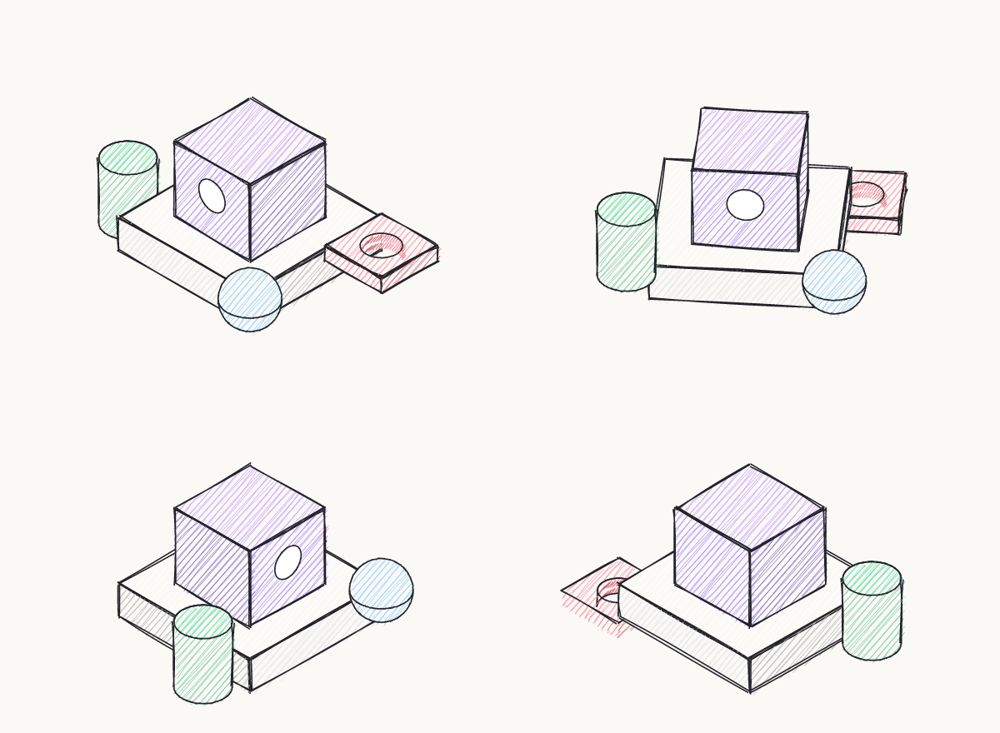

Documentation
Everything you need to script hand-drawn 3D and 2D animations in Rust.
Introduction
Rough-Animations is a Rust library for making short explainer animations that look sketched on a whiteboard. You describe a scene with a Stage: add objects, play animations, then render to mp4, webm, gif or png. It is inspired by manim and uses rough.js-style drawing.
The whole API is deliberately small. Positions are tuples, colours are names, and numbers can be ints or floats, so a scene is a handful of lines.
cargo doc --open.Installation
Add the crate from Git, since it is not published on crates.io:
[dependencies]
rough-animations = { git = "https://github.com/Super-Yojan/Rough-Animations" }| For | You need |
|---|---|
| Building | Rust 1.85 or newer (the crate uses edition 2024) |
.mp4 .webm .gif output | ffmpeg on your PATH |
math(..) and latex(..) | pdflatex, plus pdftocairo (poppler) or mutool (MuPDF) |
PNG output and everything else work without any of these, so you can start with stills.
Quick start
Create src/main.rs:
use rough_animations::prelude::*;
fn main() -> Result {
let mut s = Stage::new(900, 600); // hand-drawn look, isometric camera
let tower = s.add(cuboid(80, 110, 80).base_at((0, 0, 0)).fill("purple"));
let note = s.add(text("compute").at((0, 150, 0)));
s.play(create(tower)); // outline traced, then filled in
s.play(write(note));
s.play(all([move_by(tower, (100, 0, 0)), fill_to(tower, "rose")]).duration(1.5));
s.wait(0.5);
s.render("out.mp4") // .mp4 .webm .gif, or .png for the last frame
}cargo run --releaseFour things happened: Stage::new made a 900×600 canvas, s.add put objects in the scene and returned ids, s.play queued animations one after another, and s.render drew every frame and encoded the file.
s.render("target/check.png"). It draws the finished scene and needs no ffmpeg.The world
The camera is isometric. x runs to the lower right, z to the lower left, and y is up. The point (0, 0, 0) sits at the screen point set by Stage::origin(x, y), which by default is the centre, 60% of the way down.
- Positions are
(x, y, z)tuples. - Sizes, positions, times and angles can be ints or floats. Only counts (
ngonsides,starpoints) must be whole numbers. - Rotations are radians. Use
deg(90)to convert. - Solids are centred on their position.
.base_at(p)stands them onpinstead, which saves half-height arithmetic.
let base = s.add(cuboid(120, 40, 120).base_at((0, 0, 0)).fill("slate"));
// Stand the next box on top of the first: its base is the first box's top, y = 40.
let top = s.add(cube(60).base_at((0, 40, 0)).fill("amber"));Nearer objects hide the ones behind them automatically, so stacking and overlap just work.
Stage
A Stage owns the scene and its timeline. Create one with a size, then optionally chain settings:
| Method | What it does |
|---|---|
Stage::new(w, h) | A canvas in pixels, with the sketch look and isometric camera |
.fps(n) | Frames per second of the video |
.theme(t) | The page colour plus the default colours of lines, text, titles and captions, e.g. "dark". See Themes |
.transparent() | No page at all, for figures in slides and documents. See Transparent figures |
.background(c) | The page colour only. For a dark page use a theme, so lines and text change too |
.origin(x, y) | Screen pixel where (0,0,0) lands |
.zoom(f) | Scale the scene; line widths and text keep their size |
.sketch(Sketch) | How hand-drawn lines look, see The look |
.wobble(fps) | Redraw strokes this many times a second for a "boiling line" feel |
s.add(obj) -> Id | Put an object in the scene |
s.play(anim) | Append an animation to the timeline |
s.wait(secs) | Hold the current picture |
s.render(path) | Draw and write the file |
s.pixel(x, y) | The floor point under a screen pixel |
.png (last frame) can follow a video from the same stage, but a video after a .png is an error.Objects & builders
Every shape function returns an Object. Chain builders to style and place it, then s.add it to get an Id that animations refer to.
| Builder | Meaning |
|---|---|
.at(p) | Centre the object on p |
.base_at(p) | Stand a solid on p |
.fill(c) .stroke(c) .color(c) | Fill colour, outline colour, or both |
.opacity(0..1) | Transparency |
.stroke_width(w) | Outline thickness |
.rotated(r) .scaled(s) | Initial rotation (radians) and scale |
.layer(n) | Draw order tweak |
.hidden() | Start invisible |
.solid() .hatched() | Flat fill versus hatching |
.shift(dx, dy) .on(plane) | Flat shapes only: nudge in the shape's own plane, or stand it on a wall |
create, write and fade_in hide their object until they start, so just add it and never hide it yourself. Other animations do not hide anything.
Colours
A colour is a name, a hex string like "#a882ff" (also "#rgb"), or an (r, g, b) tuple. A wrong name panics and lists the valid ones. ink, indigo and stone are the light theme's default ink, title and caption colours; other themes use their own.
3D solids
| Function | Description |
|---|---|
cuboid(w, h, d) | A box |
cube(s) | A box with equal sides |
cylinder(r, h) | A cylinder standing on the floor |
cone(r, h) | A cone |
sphere(r) | A sphere |
prism(flat_shape, h) | Extrude a flat shape upward into a solid |
let mut s = Stage::new(900, 600);
s.add(cube(70).base_at((-150, 0, 0)).fill("purple"));
s.add(cylinder(30, 90).base_at((-40, 0, 0)).fill("mint"));
s.add(cone(35, 80).base_at((70, 0, 0)).fill("amber"));
s.add(sphere(36).base_at((170, 0, 0)).fill("sky"));
Flat shapes
Flat shapes lie on the floor by default. They are the raw material for booleans and prism.
| Function | Description |
|---|---|
circle(r) ellipse(rx, ry) | Round shapes |
rect(w, h) | Rectangle |
ngon(sides, r) | Regular polygon; sides must be a whole number |
star(n, outer, inner) | Star with n points |
polygon([(x, y), ..]) | Any outline from 2D points |
Standing a flat shape on a wall
.on(Plane::Front) lays a flat shape on the visible face at z = +half-size of a box (the wall facing the right of the screen). Plane::Side is the wall facing the left, and Plane::Ground is the default floor. Nudge shapes a hair in front of the face to keep depth ordering exact.
let head = s.add(cuboid(100, 100, 100).base_at((0, 90, 0)).fill("#f4c7a1"));
// The head's front face is the plane z = 50; sit the eye just in front of it.
let eye = s.add(circle(11).fill("white").solid().on(Plane::Front).at((-22, 148, 50.5)));.on() is for flat shapes and text, not solids. Calling it on a solid panics.Booleans & extrusion
Combine flat shapes with .union(b), .minus(b), .intersect(b) and .xor(b). Do it before placing the result, then extrude it to get a solid with holes.
let plate = rect(80, 80).minus(circle(25)); // a square with a round hole
s.add(prism(plate, 40).base_at((90, 0, 0)).fill("rose"));
Booleans are 2D only. There are no 3D booleans, but prism of a combined shape covers most needs.
Lines & arrows
line(a, b) and arrow(a, b) take two world points.
s.add(arrow((0, 0, 0), (120, 0, 0)).color("indigo"));Text & LaTeX
| Function | Description |
|---|---|
text("..") | Plain text in the handwriting font |
label("..") | A steady caption: size 32, in the theme's caption colour (stone grey in the light theme) |
title("..") | A big lively title: size 72, in the theme's title colour (indigo in the light theme), .animate()d |
math(r"\frac12")? | A formula in math mode. Returns a Result, so use ? |
latex("..")? | Arbitrary LaTeX |
Text builders: .font_size(n), .tracking(em) (letter spacing, default 0.06), .animate(), .steady(), .handwritten(), plus the usual colours.
- Default: crisp and steady, solid fill, written on with a wipe. It stays readable.
.animate()adds the lively hand-drawn wobble. Great on a big title, hard to read when small..steady()is the opposite: it calms atitle(..)that is too small to wobble legibly..handwritten()makes text,mathorlatexlook written by hand: wobbly, slightly uneven letters, a drifting baseline and a pen's weight. It is calculated once, so it does not flicker..solid()and.hatched()switch the fill;.stroke_width(w)adds a sketchy outline.
let mut s = Stage::new(1280, 720).zoom(1.4);
let title = s.add(text("Hello").font_size(90).color("#3c3278").animate().at(s.pixel(640, 120)));
let formula = s.add(math(r"\int_0^1 x^2\,dx = \frac{1}{3}")?.font_size(70).color("rose").handwritten().at(s.pixel(640, 320)));
s.play(write(title));
s.play(write(formula).duration(2));
math and latex need pdflatex plus pdftocairo or mutool. A misspelled macro reports LaTeX error: Undefined control sequence.Animations
Each function takes an Id from s.add(..) and returns an Anim you pass to s.play.
| Kind | Functions |
|---|---|
| Appear | create(id) write(id) (same, but text goes letter by letter) fade_in(id) |
| Disappear | uncreate(id) fade_out(id) |
| Move | move_to(id, p) move_by(id, d) move_from(id, offset) (settles onto the current spot) |
| Change | rotate_to/by(id, r) scale_to(id, s) opacity_to(id, a) fill_to(id, c) stroke_to(id, c) |
| Shape | morph(id, shape) transform_into(id, other_id) |
| Time | wait(secs) |
Timing & easing
Tweak any Anim with builders:
| Builder | Meaning |
|---|---|
.duration(secs) | The total length |
.delay(secs) | Wait before starting. Put it after .duration() |
.ease(Easing::X) | The speed curve. Only affects single animations |
.then(b) | Run b after this |
.with(b) | Run b alongside this |
Easing variants: Linear, QuadIn, QuadOut, QuadInOut, CubicIn, CubicOut, CubicInOut (default, smooth start and stop), SineInOut, BackOut (overshoots, then settles) and BounceOut.
s.play(rotate_by(b, (0, deg(90), 0)).duration(1).delay(0.5)); // 1 s long, starts after 0.5 s
s.play(move_by(a, (80, 0, 0)).ease(Easing::BounceOut));.duration() is the total length including the delay, so write .duration(..) first and .delay(..) after.Combining animations
| Function | Behaviour |
|---|---|
all([a, b]) | Together |
seq([a, b]) | One after another |
lag(0.3, [a, b, c]) | Staggered, each starting 0.3 s after the last |
write_all(&ids) create_all(&ids) | Staggered appearance of a list of ids |
clear(&ids) | Erase a list together (0.7 s) |
Groups take arrays directly, with no boxing needed.
let parts = [torso, neck, head];
s.play(lag(0.3, parts.map(|id| create(id).duration(0.9))));
s.wait(1);
s.play(clear(&parts)); // wipe the scene before the next ideaGroups
A thing made of several parts, like a rover or a character, is a Group. Add the parts, then move, turn, scale and fade the whole thing as one. Each part is still an ordinary object that you can animate on its own.
let mut s = Stage::new(900, 600);
let mut rover = Group::new();
s.add_to(&mut rover, cuboid(120, 30, 70).base_at((0, 10, 0)).fill("white"));
let wheel = s.add_to(&mut rover, cylinder(14, 10).at((40, 14, 40)).rotated((deg(90), 0, 0)).fill("ink"));
s.place(&rover, (-80, 0, 40)); // set it down instantly
s.play(rover.create()); // the parts build up one after another
s.play(rover.move_by((160, 0, 0)).duration(2)); // the whole rover drives
s.play(rover.rotate_by((0, deg(90), 0))); // and turns on the spot, wheels included
s.play(fade_out(wheel)); // a part is still an ordinary object
| Method | What it does |
|---|---|
Group::new() | An empty group. Group::from([a, b]) and .collect::<Group>() also work |
s.add_to(&mut group, obj) -> Id | Add an object and put it in the group; returns the part's id |
group.add(id) | Put an object that is already in the stage into the group |
.move_by(d) | Shift every part by d |
.move_to(p) | Move the group so the bottom centre of its bounding box is at p, like base_at |
.rotate_by(angles) | Turn it like one object around its pivot (radians, see deg). Parts orbit the pivot and turn themselves, so wheels stay correct |
.scale_by(k) | Grow or shrink around the pivot (2 is twice the size) |
.create() .write() | The parts build up one after another (3 s at most; use .duration(..) to change) |
.fade_in() .fade_out() .opacity_to(a) .uncreate() | Act on every part at once |
group.pivot(p) | Turn and scale around the world point p instead of the bottom centre |
s.place(&group, p) | Move it instantly (no animation) so its bottom centre is at p |
group.bounds(&s.scene) | The box around every part right now |
Every animation returns an Anim, so .duration(), .ease(), .delay() and all([..]) work on them. A group also works with create_all(&group), write_all(&group) and clear(&group).
move_to on every part would stack them all on one point. group.move_by(..) shifts them together and keeps the shape.A group's position is the bottom centre of its bounding box, so move_to((x, 0, z)) puts whatever it holds on the floor there. Groups do not nest by themselves (use group.extend(other.iter())), scaling is uniform, there is no absolute rotate_to, and upright text in a group moves with it but does not rotate. examples/rover.rs is a worked example.
Morphing
morph(id, shape) turns a flat shape, or an extruded solid, into another flat shape or prism. Outlines are paired, given the same number of points, and interpolated. transform_into(id, other_id) also takes the target's position and colours; add the target with s.add first (it stays hidden until used).
let a = s.add(circle(50).fill("purple"));
s.play(create(a));
s.play(morph(a, star(5, 70, 30)).ease(Easing::BackOut)); // circle into a starLayout helpers
Placing things in world coordinates is awkward for titles, so the layout helpers work in screen pixels.
| Helper | What it does |
|---|---|
s.put(obj, x, y) | Add obj standing on screen pixel (x, y); text and flat shapes are centred there |
s.tag(id, "name", Side::Above) | Label beside an object. Side is Above, Below, Left or Right. Pass label("x").color("rose") to style it |
s.heading("Title", "caption") | Header and caption near the top, sized to the canvas (the title only wobbles on canvases 576 px tall or more); returns their ids ("" for no caption) |
s.pixel(x, y) | The world floor point under a screen pixel (call after origin/zoom) |
s.screen(point) | The pixel a world point lands on |
obj.dimensions() | A text object's size in pixels |
let intro = s.heading("Meet Pixel", "a 3D avatar, built from a handful of shapes");
let box_id = s.add(cube(80).base_at((0, 0, 0)).fill("sky"));
s.tag(box_id, "compute", Side::Above);
s.put(label("note"), 200, 600);A title(..) or label(..) added with plain s.add(..) and no .at(..) goes to the top centre, and just under it.
title or label hides the function of the same name for the rest of its scope. Name the variable something else.Themes
A theme is the page colour plus the default colours of lines, text, titles and captions, chosen together with one call. The same script then looks right on white paper, a chalkboard or a blueprint.
let mut s = Stage::new(900, 600).theme("dark");
s.heading("Title", "caption"); // themed automatically
s.add(cube(80).base_at((0, 0, 0)).fill("mint")); // outlines use the theme's ink
s.add(text("plain text").at(s.pixel(450, 500))); // so does text
| Theme | Look | Colours |
|---|---|---|
"light" | The default look: warm white paper, dark ink, indigo titles. | pageinktitlecaption |
"dark" | A near-black page with soft white ink. | pageinktitlecaption |
"chalkboard" | A green classroom board with chalk-white lines and rougher strokes. | pageinktitlecaption |
"blueprint" | White technical lines on blueprint blue, with straight, tidy strokes. | pageinktitlecaption |
"sepia" | Aged paper with brown ink. | pageinktitlecaption |
"terminal" | Green phosphor on black, with straight lines. | pageinktitlecaption |
.background("#101018") changes the page but leaves lines and text in the default dark ink, so they vanish. Use .theme("dark").Your own theme
Theme::custom(page, ink) builds one. Titles use the ink, and captions are the ink faded a third of the way into the page; adjust them with the builders.
let ocean = Theme::custom("#06283d", "#e0f2ff") // the page, then the ink
.title("#7dd3fc"); // also .caption(c) .ink(c) .background(c) .sketch(s)
let mut s = Stage::new(900, 600).theme(ocean);
let dark = Theme::by_name("dark"); // Option<Theme>; Theme::all() lists every built-in oneHow a theme behaves
- Colours you choose yourself (
.fill,.stroke,.color) are never touched. A theme only changes the defaults. - Order does not matter: a theme reaches objects added before it too, and a later theme replaces an earlier one.
- Some themes bring their own strokes: blueprint and terminal are drawn straight, chalkboard rougher. A later
.sketch(..)overrides that, and a theme without strokes keeps the ones you chose. - Filled shapes still hide the lines behind them, and the patch that does it follows the themed page.
- Named palette colours like
"mint"are the same in every theme; only the defaults change. - An unknown theme name panics and lists the valid ones, like an unknown colour does.
The look
Sketch::default() is the classic whiteboard look. Sketch::clean() gives straight lines with the same hatching.
| Setting | Meaning | Default |
|---|---|---|
roughness | How far lines wander from straight | 1.3 |
bowing | How much lines bow in the middle | 1.2 |
stroke_width | Outline thickness | 1.6 |
hachure_gap | Distance between hatch lines | 6.0 |
hachure_angle | Hatch angle in degrees | -41 |
let s = Stage::new(900, 600)
.sketch(Sketch::default().roughness(2.0).hatch_gap(9.0))
.theme("dark") // the page and the default ink; see Themes
.wobble(8); // redraw strokes 8x a second: boiling linesStrokes are seeded per object, so they stay put from frame to frame instead of shimmering, unless you ask for wobble.
Turning, picking and vectors
These engine features are what the web components are built on, and they work in plain Rust too.
| API | What it does |
|---|---|
.yaw(deg(30)) | Turn the whole scene about the vertical axis. Solids, hidden-surface order and wall decals all follow. s.set_yaw(radians) changes it later, and s.current_yaw() reads it |
obj.action("open") | Name a part so it can be found by pick |
s.pick(x, y) | Some((id, action)) for the topmost visible part under a screen pixel, or None |
.pixel_ratio(2.0) | Draw for high-density screens: line widths, hatching, text and arrowheads scale with it. Pass the device size to Stage::new and scale zoom and origin by the same ratio |
s.to_svg() | The current frame as an SVG string, same strokes and hatching as vector paths |
s.time() s.redraw() | The time the scene has been advanced to, and a draw of the scene as it is without moving time |
let mut s = Stage::new(600, 440).zoom(1.3).origin(300, 300).yaw(deg(40));
let tower = s.add(cuboid(80, 70, 80).base_at((0, 30, 0)).fill("purple").action("open"));
s.play(create(tower));
s.seek(s.duration());
s.set_yaw(deg(90)); // turn the scene a quarter circle
let hit = s.pick(300.0, 250.0); // Some((tower, Some("open")))
std::fs::write("tower.svg", s.to_svg())?; // a vector poster
Run cargo run --release --example turn to render that scene from four angles (target/turn-0.png to turn-3.png). At 180° the face drawn on the front of the tall box is gone, because wall decals only show from the side they face.
pick tests each object by the screen outline of its bounding box, so round parts are hit a little beyond their drawn edge. Plain text is never picked. to_svg writes a shape caught mid-create whole, so export finished frames.Rendering
s.render(path) picks the output from the extension:
| Extension | Result | Needs |
|---|---|---|
.mp4 .webm .gif | The whole animation as a video | ffmpeg |
.png | Only the final frame | nothing |
Other extensions return an error. Render the video first and the png after, never the other way round. For lower-level control there are s.still(path), s.render_frame(t), s.render_video(..) and s.render_png_sequence(dir, fps), plus s.duration() to read the timeline length.
s.render("target/out.mp4")?; // video first
s.render("target/out.png") // then the last frame, from the same stageFrames are piped as raw RGBA to ffmpeg. Missing parent directories for a png are created for you.
Transparent figures for slides and documents
Make the page see-through and trim the picture to what you drew, so it sits on any slide background. Shapes in front still hide the lines behind them.
let mut s = Stage::new(900, 600).transparent(); // or .theme("dark").transparent()
s.add(cuboid(90, 90, 90).base_at((0, 0, 0)).fill("mint"));
s.add(sphere(40).at((100, 20, 70)).fill("rose"));
s.still_cropped("figure.png", 16)?; // final frame, trimmed, 16 px of marginPNG and GIF keep the transparency. .mp4 and .webm cannot, and render returns an error saying so rather than filling the page with black. "transparent" and "#rrggbbaa" also work as colours. The ink stays the theme's, so on a dark slide pair it with a dark theme.
On the web
The same engine compiles to WebAssembly and runs live in the browser. A TypeScript package, rough-figure (in web/), wraps it with typed scene builders, a canvas player, a <rough-figure> element and a React component. Figures can be dragged to turn, hovered, clicked, scrubbed, themed and exported to SVG.
rough-figure is a working name and the package is not published yet, so build it from the repo.Build it
rustup target add wasm32-unknown-unknown
cargo install wasm-bindgen-cli --version "$(grep -A1 'name = "wasm-bindgen"$' Cargo.lock | grep version | cut -d'"' -f2)" --locked
cd web && pnpm install
pnpm build:wasm # Rust to WebAssembly (runs scripts/build-web.sh)
pnpm build # TypeScript to dist/, with the wasm copied next to it
pnpm demo # http://localhost:5173/catalog/ (also /demo/ and /demo/gallery.html)The wasm file is about 1.7 MB (about 570 KB gzipped). The engine's spec and web Cargo features add JSON scenes and the WebAssembly entry point; the plain Rust library does not need them.
A first figure
import { figure, cuboid, sphere, create, lag, FigurePlayer } from "rough-figure";
const spec = figure({
width: 720, height: 520, zoom: 1.4, origin: [360, 360],
objects: [
cuboid(150, 28, 150, { id: "base", baseAt: [0, 0, 0], fill: "slate" }),
sphere(24, { id: "orb", baseAt: [0, 28, 0], fill: "sky", action: "ping" }),
],
timeline: [lag(0.3, [create("base"), create("orb")])],
});
const player = await FigurePlayer.create(document.querySelector("canvas")!, spec, {
loop: true,
onAction: ({ action, id }) => console.log(action, id),
});Describing a figure
A figure is JSON that mirrors the Rust API one to one: an object is a kind plus the builders you would chain, and an animation is an op plus its target. Angles are in degrees. Unknown fields are rejected, and mistakes (an unknown colour, a missing field, an animation naming an object that does not exist) come back as readable errors instead of drawing nothing.
{
"width": 900, "height": 600, "theme": "light",
"objects": [
{ "id": "tower", "kind": "cuboid", "size": [80, 110, 80], "base_at": [0, 0, 0],
"fill": "purple", "action": "open" }
],
"timeline": [
{ "op": "create", "target": "tower" },
{ "op": "move_by", "target": "tower", "by": [100, 0, 0], "duration": 1.5 }
]
}Figure fields
| Field | Meaning |
|---|---|
width height | Canvas size in pixels (required) |
zoom origin | Scene scale, and the screen pixel where (0, 0, 0) lands (default centre, 60% down) |
yaw | Starting turn in degrees |
theme | light, dark, chalkboard, blueprint, sepia or terminal |
background | A colour, or "transparent" to show the page behind the canvas |
look roughness wobble | "sketch" or "clean" lines, how far lines wander, and strokes redrawn this many times a second |
fps | Frame rate used when the timeline is rendered as video |
objects timeline | The parts, and the animations played one after another |
Objects
kind is one of cuboid cube cylinder cone sphere circle ellipse rect ngon star polygon prism line arrow text label title. Shape parameters are size, radius, height, width, rx, ry, sides, points, outer, inner, from, to, text and (for prism) shape. Any object also takes:
| Option | Meaning |
|---|---|
id | Name that animations and click events refer to |
at base_at | Centre the object on a point, or stand it on one |
rotated scaled | Rotation in degrees [x, y, z], and a scale number or [x, y, z] |
fill stroke color | Colours: a name or "#rrggbb" |
opacity stroke_width layer hidden | As in Rust |
plane shift | "front", "side" or "ground", and a shift in that plane (flat shapes and text) |
solid hatched | Flat fill versus hatching |
font_size tracking animate handwritten | Text styling |
union minus intersect xor | Another flat object to combine with, applied before placement |
action | Makes the part interactive, see Turning & clicking |
Animations
op is one of create write fade_in uncreate fade_out move_to move_by move_from rotate_to rotate_by scale_to opacity_to fill_to stroke_to morph wait all seq lag create_all write_all clear. Arguments are target (or targets), to, by, shape (for morph), seconds (for wait and the gap of lag) and anims (children of all, seq and lag). Any of them takes duration, delay and ease (linear, quadIn, cubicInOut, backOut, bounceOut and the rest of the easings).
Typed builders
In TypeScript you rarely write the JSON: the builders mirror the Rust functions, take camelCase options, and are checked by the compiler. figure({..}) gives completion for a whole figure.
import { figure, prism, star, circle, create, rotateBy, all, toJSON } from "rough-figure";
const gear = figure({
width: 480, height: 360, zoom: 1.2, origin: [220, 250],
objects: [
prism(star(12, 56, 45, { minus: circle(16) }), 24, { id: "gear", baseAt: [0, 0, 0], fill: "purple" }),
],
timeline: [create("gear"), rotateBy("gear", [0, 70, 0], { duration: 2, ease: "cubicInOut" })],
});
toJSON(gear); // the JSON the engine readsObjects: cuboid cube cylinder cone sphere circle ellipse rect ngon star polygon prism line arrow text label title. Animations: create write fadeIn uncreate fadeOut moveTo moveBy moveFrom rotateTo rotateBy scaleTo opacityTo fillTo strokeTo morph wait all seq lag createAll writeAll clear.
Turning & clicking
- Drag to turn. Dragging sideways turns the scene about the vertical axis. Let go while moving and it keeps spinning, then slows down. The arrow keys turn it too (Shift for bigger steps), because the canvas can take focus.
- Hover. A part with an
actiongets a heavier outline and the cursor becomes a pointer. - Click. Clicking such a part (without dragging) calls
onAction({ action, id }), or fires anactionevent on the element. A drag is never a click. - Time.
play,pause,replay,seek(t)andscrub(0..1)control the timeline. Looping holds the finished figure forloopDelayseconds before restarting. Withprefers-reduced-motionthe figure starts finished. - Cheap when idle. It draws only when something changes, and stops while scrolled out of view.
Try it: this is the servers figure. Drag to turn it, click a server.
Click a server…
// Tie the timeline to scroll position (a "story" figure).
addEventListener("scroll", () => {
const r = canvas.getBoundingClientRect();
player.scrub(Math.min(Math.max(1 - r.bottom / (innerHeight + r.height), 0), 1));
});Components
The player
const player = await FigurePlayer.create(canvas, spec, {
autoplay: true, // false shows the finished figure
loop: true, loopDelay: 1.2,
interactive: true, // drag, hover, click (false for a fixed picture)
speed: 1,
pixelRatio: 2, // default: devicePixelRatio, at most 3
wasmUrl: "/assets/rough_engine_bg.wasm", // if not next to the module
onAction: ({ action, id }) => {},
onReady: (p) => {},
onError: (e) => {},
});| Method | Meaning |
|---|---|
play() pause() replay() | Playback |
seek(t) scrub(u) | Jump to a time in seconds, or to a fraction 0 to 1 of the timeline (and pause) |
setYaw(deg) | Turn the scene |
setTheme(name) setLook(look) setSpeed(n) | Change the look live, keeping the time and turn |
toSVG() toBlob() | Export, see Posters |
destroy() | Stop and free the figure |
duration time playing yaw lastFrameMs | Read-only state, including how long the last frame took to draw |
The HTML element
<script type="module" src="rough-figure/element"></script>
<rough-figure src="/figures/inbox.json" theme="dark" loop></rough-figure>
<!-- or with the description inline -->
<rough-figure><script type="application/json">{ "width": 480, "height": 360, "objects": [] }</script></rough-figure>Attributes: src, theme, look, yaw, speed, loop, static (show the finished figure) and fixed (no dragging or clicking). Events: ready, error and action (event.detail is { action, id }). The running player is on element.player.
React
import { RoughFigure } from "rough-figure/react";
<RoughFigure spec={spec} theme="dark" loop onAction={(e) => navigate(e.action)} />;The figure restarts when spec changes (compared by value). theme, look, yaw and speed update live without a restart.
Component library
Eleven ready-made figures for product UI, each a named component with typed props. Pick one, drop it in, and wire its clickable parts to your own actions. These three are live, running the engine in your browser, so drag them and click their parts:
Open the live catalog → It has all eleven with search, a theme switcher, a usage snippet for React, the HTML element and TypeScript, and SVG/PNG download. To run it from the repo instead, use pnpm demo and open /catalog/.
| Component | Category | Shows | Actions |
|---|---|---|---|
EmptyInboxempty-inbox | Empty states | An open tray with an envelope dropping in. For inboxes, notifications and message lists with nothing in them yet. | compose open |
Uploadupload | Empty states | A file lifting off a tray with an arrow. For upload areas, imports and drop zones. | upload |
NotFoundnot-found | Errors | Three blocks spelling 404, the last one knocked over. For missing pages and empty search results. | home search |
AccessDeniedaccess-denied | Errors | A padlock whose shackle lifts. For permission errors, locked content and sign-in walls. | unlock |
Loadingloading | Loaders | Three cubes hopping in turn. Loop it for a spinner with some character. | none |
Successsuccess | Status | A wrapped gift with a bow and stars popping. For completed actions, rewards and confirmations. | open |
Notificationsnotifications | Status | A bell with an unread badge. For notification settings, alerts and reminders. | open dismiss |
Serversservers | Status | A stack of three servers with status lights. For infrastructure, hosting and system status. | unit-1 unit-2 unit-3 |
Analyticsanalytics | Product | Five bars growing with a trend arrow. For dashboards, reports and growth screens. | report trend |
Settingssettings | Product | Two gears that turn. For settings pages, preferences and configuration screens. | settings tune |
Rocketrocket | Onboarding | A rocket lifting off its pad. For onboarding, launches and getting-started screens. | launch fins |
In React
import { EmptyInbox } from "rough-figure/library/react";
export function Inbox() {
return (
<EmptyInbox
loop
size={420}
theme="dark"
onAction={(e) => {
// e.action is typed: "compose" | "open"
if (e.action === "compose") openComposer();
}}
/>
);
}Every component takes the same props: onAction (with the figure's own action names as a type), size (largest width in CSS pixels), label (accessible description), theme, look, yaw, loop, autoplay, interactive, speed, className and style.
As an HTML element
<script type="module" src="rough-figure/element"></script>
<rough-figure figure="not-found" loop></rough-figure>As data
import { library, figureById, categories } from "rough-figure/library";
figureById("success")?.actions; // [{ name: "open", label: "Gift", description: "..." }]
library.filter((f) => f.category === "errors"); // build your own picker
FigurePlayer.create(canvas, figureById("loading")!.spec, { loop: true });Keeping the site's copy current
GitHub Pages only serves static files, so the live figures use a built copy of the engine in docs/site/engine/ (and the catalog page docs/site/catalog.html). After changing the engine, the library or a figure, run scripts/build-site.sh and commit the result.
Adding your own figure
A library figure is a defineFigure({..}) call: an id, a component name, a category, tags, the list of clickable actions and a figure spec. The test suite (pnpm test) loads every figure into the real engine and checks that ids are unique, that the declared actions are exactly the ones the parts use, that timelines only name objects that exist, that each figure draws, survives every theme, and that every declared action can really be clicked.
Posters (SVG and PNG)
player.seek(player.duration); // the finished figure
const svg = player.toSVG(); // vector paths, same strokes and hatching, sharp at any size
const png = await player.toBlob(); // what is on the canvas right nowUse the SVG as the fallback image while the engine loads, for print, or for social cards. A shape caught mid-create is written whole, so export finished frames. With a transparent page, hidden-line removal uses the theme's page colour.
Notes & limits
- Sharp on retina. Figures draw at
devicePixelRatio(at most 3) and the canvas is shown at the figure's own size or smaller. Cost grows with the square of the ratio: a 720×520 figure takes about 36 ms a frame at 2×. PasspixelRatio: 1for very large figures. - Rewinding. A stage only plays forward, so going backwards rebuilds the scene and replays it to the target time. Nothing is drawn during that, but a long timeline costs one forward seek of its length.
- No LaTeX in the browser.
mathandlatexneedpdflatexand are not part of the web build. - Picking is approximate for round parts, see Turning & picking.
- Not production-ready yet. The package name is a placeholder, nothing is published, and the React wrapper has been type-checked but not run in a browser.
Recipes
Multi-scene videos
One idea per scene: build it, write_all or create_all its parts, hold with s.wait(..), then clear(&ids) before the next. examples/intro.rs is a full example, and it is the video you can watch on the README.
Build a character
examples/avatar.rs builds a 3D avatar from boxes and flat shapes that draws itself, blinks and smiles. The trick is to stack boxes with base_at and lay the face on the head's front plane with .on(Plane::Front).
cargo run --release --example avatarMove a whole thing at once
examples/rover.rs builds a rover from boxes, wheels, a mast and a phone as one Group, then drives it, turns it on the spot and drives again. The group moves and turns as one while every part stays an ordinary object.
cargo run --release --example roverTry every theme
examples/themes.rs draws one scene in all six built-in themes and tiles them into target/themes.png. It is also a template for writing a script that looks right in any theme: nothing in it picks a colour for lines or text.
Run the bundled examples
| Example | Produces |
|---|---|
hello | target/hello.mp4, the smallest useful script |
architecture | a still isometric sketch |
animate | target/animate.mp4 and .gif, the scene being built up |
shapes | target/shapes.png and target/booleans.png |
morph | target/morph.mp4, shapes and solids morphing |
text | target/text.mp4 and .png, labels and a formula |
avatar | a blocky 3D avatar that draws itself, blinks and smiles |
rover | target/rover.mp4 and .png, a rover built as a Group that drives and turns |
themes | target/themes.png, the same scene in all six built-in themes |
handwritten | target/handwritten.png, typeset vs handwritten formulas |
occlusion | target/occlusion.png, stacking and overlap |
turn | target/turn-0.png to turn-3.png, one scene from four turns of the camera |
intro | docs/media/intro.mp4, the intro video |
cargo run --release --example helloUsing it with agents
The library is designed to be driven by an AI agent. The repo includes a skill that teaches the workflow: write a short script, draw a still first, then check the motion from sampled frames, because an agent cannot watch a video. It also bundles the whole API and a table of what each error means.
Install the skill
Claude Code, as a plugin:
/plugin marketplace add Super-Yojan/rough-animations
/plugin install rough-animations@rough-animationsOr in one step on newer versions: /plugin install rough-animations --marketplace Super-Yojan/rough-animations.
Any agent, with one line. It downloads the skill and puts it in ~/.claude/skills:
curl -fsSL https://raw.githubusercontent.com/Super-Yojan/rough-animations/main/scripts/install-skill.sh | bashAdd options after bash -s --:
| Option | Does |
|---|---|
--project | Install for the current project only (./.claude/skills) |
--dir PATH | Install into PATH/rough-animations, for any agent that reads SKILL.md folders. Give the folder that agent loads skills from |
--ref NAME | Install a particular branch or tag |
--uninstall | Remove it again. It refuses to delete a folder that is not this skill |
curl -fsSL .../install-skill.sh | bash -s -- --dir ~/my-agent/skillsRunning it again updates the skill in place. It needs bash, curl and tar (on Windows, use WSL or Git Bash).
By hand: copy the skills/rough-animations folder from the repo into your agent's skills folder.
Agents working inside a clone of the repo get the skill automatically. It lives in skills/rough-animations, and .claude/skills/rough-animations links to it.
Two helper scripts let an agent look at what it made:
S=~/.claude/skills/rough-animations/scripts # wherever the skill lives
$S/contact-sheet.sh target/out.mp4 1.5 4 target/sheet.png # every 1.5 s, 4 per row
$S/frame.sh target/out.mp4 3.2 target/at3.png # one frame at 3.2 s
$S/frame.sh target/out.mp4 -0.5 target/end.png # a negative time counts from the endOn a contact sheet, look for things overlapping or clipped at the edges, text colliding with shapes, an object that never appears, and an unfinished last frame.
docs/cheatsheet.md, run scripts/sync-skill.sh to refresh the skill's copy. cargo test fails if you forget.Cheat sheet
The whole API on one page. A test checks every claim in docs/cheatsheet.md against the real code.
| Area | API |
|---|---|
| Solids | cuboid(w,h,d) cube(s) cylinder(r,h) cone(r,h) sphere(r) prism(flat, h) |
| Flat | circle(r) ellipse(rx,ry) rect(w,h) ngon(n,r) star(n,outer,inner) polygon([(x,y),..]) |
| Booleans | .union(b) .minus(b) .intersect(b) .xor(b) |
| Other | line(a,b) arrow(a,b) label("..") title("..") text("..") math(r"..")? latex("..")? |
| Builders | .at .base_at .fill .stroke .color .opacity .stroke_width .rotated .scaled .layer .hidden .shift .on |
| Text | .font_size .tracking .animate .steady .handwritten .solid .hatched |
| Appear | create write fade_in / uncreate fade_out |
| Move | move_to move_by move_from |
| Change | rotate_to/by scale_to opacity_to fill_to stroke_to |
| Shape | morph transform_into |
| Tweak | .duration .ease .delay .then .with |
| Combine | all seq lag write_all create_all clear |
| Groups | Group::new s.add_to .move_to .move_by .rotate_by .scale_by .create .write .fade_in .fade_out .opacity_to .uncreate .pivot s.place |
| Themes | .theme("dark") (light dark chalkboard blueprint sepia terminal) Theme::custom(page, ink) .title .caption .ink .background .sketch Theme::by_name |
| Stage | new .fps .theme .background .origin .zoom .wobble .sketch / add play wait render pixel |
| Layout | put tag heading screen dimensions |
| Turning | .yaw set_yaw .action pick .pixel_ratio to_svg |
Lower-level control (Scene, Region, custom Geometry, Stage::with) lives in the modules, not the prelude.
Troubleshooting
| You see | Cause and fix |
|---|---|
panic unknown colour "..." | Not a palette name. Use one from Colours or "#rrggbb". |
panic on(): only flat shapes ... | .on(plane) is for flat shapes and text, not solids. |
panic boolean operations need flat shapes | union/minus/... work on circle, rect, ... Extrude the result with prism. |
this Stage has already played | A stage plays once. Build a fresh one per video; a .png may follow a video. |
ffmpeg not found | Install ffmpeg for mp4, webm and gif. PNG output works without it. |
LaTeX error: Undefined control sequence | A macro is misspelled. math needs pdflatex plus pdftocairo or mutool. |
| Object drawn in the wrong depth order | Solids that pass through each other are sorted by their centres. Keep them apart. |
| A title lands in the middle of the scene | s.add(title(..)) goes top-centre only when you give no .at(..). |
| Lines and text vanish on a dark page | You set only .background(..), which leaves the default dark ink. Use .theme("dark"), see Themes. |
panic unknown theme "..." | Not a built-in theme. Use one of light, dark, chalkboard, blueprint, sepia, terminal, or pass a Theme. |
| The parts of a thing collapse into one pile | You called move_to on each part. Put the parts in a Group and move that, or use move_by. |
| A render is slow | Use --release. |
Limitations
- The camera is isometric only. No perspective. It can turn about the vertical axis (
yaw), but the tilt is fixed and turning is a camera setting, not a scripted animation. - Booleans work on flat shapes. Extrude a combined shape to get a solid with holes; there are no 3D booleans.
- Ordering is exact for boxes and approximate for the rest. A concave extruded shape can order its own walls imperfectly, and solids that pass through each other are sorted by their centres.
- Upright text labels are always drawn on top, even if the thing they label is partly hidden.
- A
Stageplays once, so build a fresh one for each video. - LaTeX goes through
pdflatexand a PDF to SVG converter. There is nodvisvgmroute yet. - Text uses plain glyph advances, with no kerning.
- Groups do not nest by themselves, scale uniformly only, have no absolute
rotate_to, and upright text in a group moves but does not rotate. - A theme changes only the defaults. Named palette colours such as
"mint"look the same in every theme.
How it works, briefly
Shapes become polygons, and roughr turns them into wobbly strokes and hatched fills, rasterised by tiny-skia. Objects are ordered on their 3D bounding boxes, and filled shapes first paint an opaque patch of paper colour so nearer shapes hide the lines behind them. Booleans and morphing work on 2D regions through i_overlay.